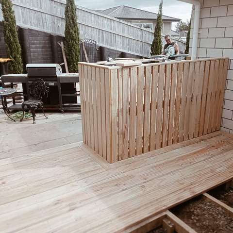
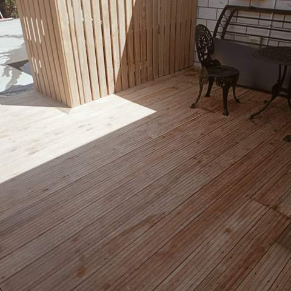
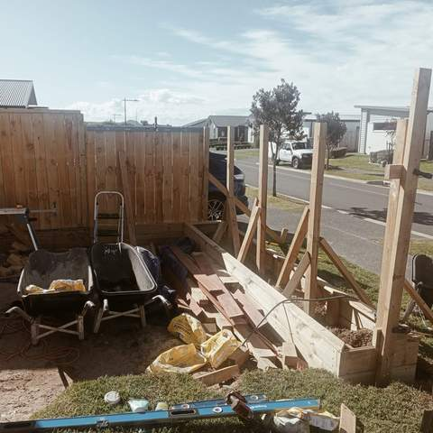
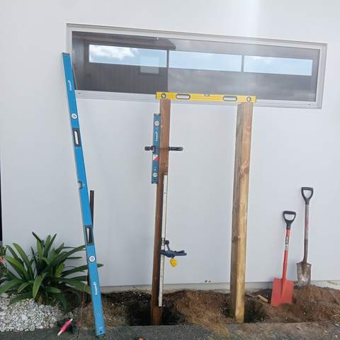

Fencing Contractors in Tauranga
Timber boundary fences, slat screens and gates, set out straight and built to handle coastal wind.
Fences, screens and gates
A fence does several jobs at once: privacy, keeping kids and dogs in, shelter from the wind and a clean edge for the garden. Straight Line Landscaping builds timber boundary fences, vertical and horizontal slat screens around decks and outdoor areas, and gates to match.
Timber options
Paling fences are the most economical way to fence a boundary. Board-and-batten and horizontal slat designs give a more finished look and can be stained to match the house. Slat screens with small gaps let some air through, which helps on exposed sections around the Mount and Papamoa where solid fences take a lot of wind.
Built from the posts up
A fence is only as straight as its posts. Posts are set out on a string line, concreted in and braced plumb while the concrete cures, and only then do rails and cladding go on. Gates get sturdier posts and good hinges and latches so they keep swinging true.
Boundary fences and the rules
Under the Fencing Act, neighbours usually share the cost of a boundary fence, and there is a formal notice process if you can't agree. Fences over 2.5 metres high need building consent, and the district plan can limit heights along front boundaries. Matt can talk this through before you commit.

Vertical slatted timber screen with steps and gravel garden 
Deck with slatted timber screen enclosure 
Pine deck with slatted timber screen 
Fence construction with posts, rails and wheelbarrows on site 
Timber posts being set and levelled against a white wall 
Curved low hedge bordering a planted garden bed with Japanese maple beside a driveway
How we work
A simple, four-step process from first call to final tidy-up.
Enquiry
Call or text Matt on 020 4006 6910, or send the quote form. A few photos of the area help.
Site visit & itemised quote
Matt comes out, measures up and talks through options, then sends a written quote broken down by item.
Build
Work is done in the right order (earthworks, walls and drainage, irrigation, then turf, decking and planting).
Tidy handover
The site is cleaned up and you get a walk-through, plus care tips such as a watering plan for new lawn.
Fencing: common questions
Who pays for a boundary fence?
Under the Fencing Act 1978, neighbours generally share the cost of an adequate boundary fence. If you want something higher spec than needed, you may pay the difference. It pays to agree with your neighbour in writing before work starts.
How high can my fence be?
Fences up to 2.5 metres are generally exempt from building consent, but the district plan can set lower limits on front boundaries and near roads. Matt can check what applies to your property.
Paling or slat fence?
Paling is the most economical for long boundaries. Slat fences and screens look more modern, let some air through and suit areas around decks and entertaining spaces.
Can you build a matching gate?
Yes. Gates can be built in the same style as the fence or screen, with posts and hardware suited to the weight of the gate.
How much does fencing cost?
It depends on length, height, style and the ground conditions for the posts. Matt will measure up and give you a free, itemised quote.
Often combined with
Need a new fence or screen?
Get a free, itemised quote from Matt. Serving Tauranga and the Western Bay of Plenty.